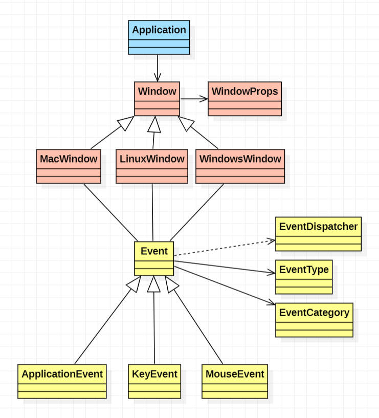
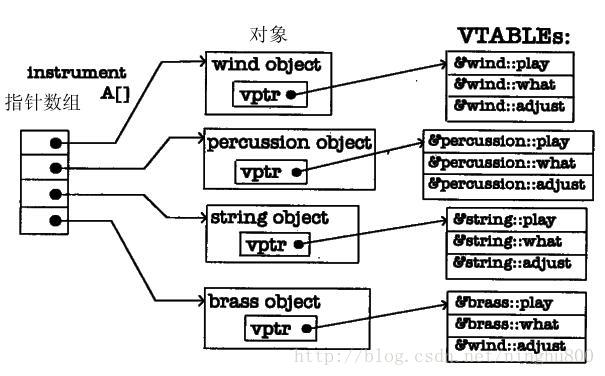
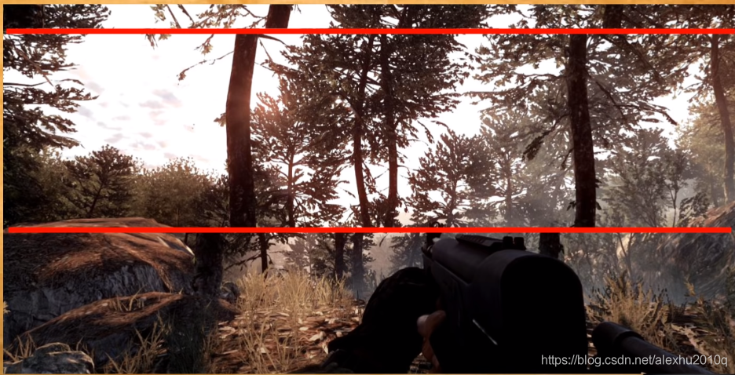
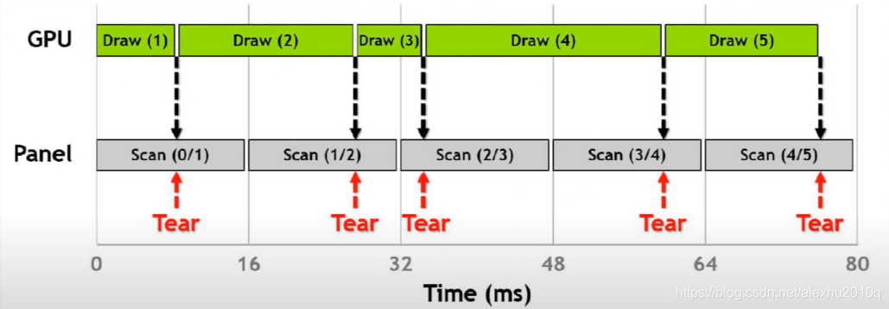
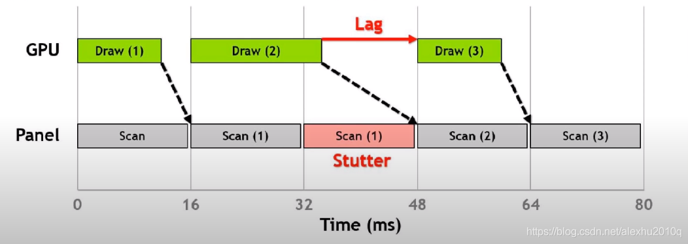

Structure

Advantages
-
Application stores a pointer of Window. Window does not need to know the existence of Application.
-
Create callback functions for Window, so Window will return a message telling Application automatically instead of asking Window from Application.
-
Abstract Window to implement on different platforms.
Event
EventType 和 EventCategory : Categorize events。
enum class EventType
{
None = 0,
WindowClose, WindowResize, WindowFocus, WindowLostFocus, WindowMoved,
AppTick, AppUpdate, AppRender,
KeyPressed, KeyReleased,
MouseButtonPressed, MouseButtonReleased, MouseMoved, MouseScrolled
};
enum EventCategory
{
None = 0,
EventCategoryApplication = BIT(0),
EventCategoryInput = BIT(1),
EventCategoryKeyboard = BIT(2),
EventCategoryMouse = BIT(3),
EventCategoryMouseButton = BIT(4)
};
Event : As a base class, introduces event scheduling, sets a Boolean variable to store whether the event has been handled.
class HAZEL_API Event
{
friend class EventDispatcher;
public:
virtual EventType GetEventType() const = 0;
virtual const char* GetName() const = 0;
virtual int GetCategoryFlags() const = 0;
virtual std::string ToString() const { return GetName(); }
inline bool IsInCategory(EventCategory category)
{
return GetCategoryFlags() & category;
}
protected:
bool m_Handled = false;
};
Setting m_Handled as protected to ensure that subclasses can set and call this property directly.
Through overloading and dissimilating Event, Different events can be implemented.
EventDispatcher : Used to set whether the event has been processed.
class EventDispatcher
{
template<typename T>
using EventFn = std::function<bool(T&)>;
public:
EventDispatcher(Event& event)
: m_Event(event)
{
}
template<typename T>
bool Dispatch(EventFn<T> func)
{
if (m_Event.GetEventType() == T::GetStaticType())
{
m_Event.m_Handled = func(*(T*)&m_Event);
return true;
}
return false;
}
private:
Event& m_Event;
};
Window
WindowProps : Stores the base properties of Window.
struct WindowProps
{
std::string Title;
unsigned int Width;
unsigned int Height;
WindowProps(const std::string& title = "Hazel Engine",
unsigned int width = 1280,
unsigned int height = 720)
: Title(title), Width(width), Height(height)
{
}
};
Window : AS a base class, presets the event function template and specifies the window creation function.
class HAZEL_API Window
{
public:
using EventCallbackFn = std::function<void(Event&)>;
virtual ~Window() {}
virtual void OnUpdate() = 0;
virtual unsigned int GetWidth() const = 0;
virtual unsigned int GetHeight() const = 0;
// Window attributes
virtual void SetEventCallback(const EventCallbackFn& callback) = 0;
virtual void SetVSync(bool enabled) = 0;
virtual bool IsVSync() const = 0;
static Window* Create(const WindowProps& props = WindowProps());
};
WindowsWindow : Overrides and implements the Window class, adds WindowData to store datas from the creation function and the current callback function, also plus settings of VSync.
class WindowsWindow : public Window
{
public:
WindowsWindow(const WindowProps& props);
virtual ~WindowsWindow();
void OnUpdate() override;
inline unsigned int GetWidth() const override { return m_Data.Width; }
inline unsigned int GetHeight() const override { return m_Data.Height; }
// Window attributes
inline void SetEventCallback(const EventCallbackFn& callback) override { m_Data.EventCallback = callback; }
void SetVSync(bool enabled) override;
bool IsVSync() const override;
private:
virtual void Init(const WindowProps& props);
virtual void Shutdown();
private:
GLFWwindow* m_Window;
struct WindowData
{
std::string Title;
unsigned int Width, Height;
bool VSync;
EventCallbackFn EventCallback;
};
WindowData m_Data;
};
The implementation of callback functions under GLFW。
// Set GLFW callbacks
glfwSetWindowSizeCallback(m_Window, [](GLFWwindow* window, int width, int height)
{
WindowData& data = *(WindowData*)glfwGetWindowUserPointer(window);
data.Width = width;
data.Height = height;
WindowResizeEvent event(width, height);
data.EventCallback(event);
});
glfwSetWindowCloseCallback(m_Window, [](GLFWwindow* window)
{
WindowData& data = *(WindowData*)glfwGetWindowUserPointer(window);
WindowCloseEvent event;
data.EventCallback(event);
});
glfwSetKeyCallback(m_Window, [](GLFWwindow* window, int key, int scancode, int action, int mods)
{
WindowData& data = *(WindowData*)glfwGetWindowUserPointer(window);
switch (action)
{
case GLFW_PRESS:
{
KeyPressedEvent event(key, 0);
data.EventCallback(event);
break;
}
case GLFW_RELEASE:
{
KeyReleasedEvent event(key);
data.EventCallback(event);
break;
}
case GLFW_REPEAT:
{
KeyPressedEvent event(key, 1);
data.EventCallback(event);
break;
}
}
});
glfwSetMouseButtonCallback(m_Window, [](GLFWwindow* window, int button, int action, int mods)
{
WindowData& data = *(WindowData*)glfwGetWindowUserPointer(window);
switch (action)
{
case GLFW_PRESS:
{
MouseButtonPressedEvent event(button);
data.EventCallback(event);
break;
}
case GLFW_RELEASE:
{
MouseButtonReleasedEvent event(button);
data.EventCallback(event);
break;
}
}
});
glfwSetScrollCallback(m_Window, [](GLFWwindow* window, double xOffset, double yOffset)
{
WindowData& data = *(WindowData*)glfwGetWindowUserPointer(window);
MouseScrolledEvent event((float)xOffset, (float)yOffset);
data.EventCallback(event);
});
glfwSetCursorPosCallback(m_Window, [](GLFWwindow* window, double xPos, double yPos)
{
WindowData& data = *(WindowData*)glfwGetWindowUserPointer(window);
MouseMovedEvent event((float)xPos, (float)yPos);
data.EventCallback(event);
});
Application
Application : Adds a pointer to Window and handling function for Event。
class HAZEL_API Application
{
public:
Application();
virtual ~Application();
void Run();
void OnEvent(Event& e);
private:
bool OnWindowClose(WindowCloseEvent& e);
std::unique_ptr<Window> m_Window;
bool m_Running = true;
};
Supplement knowledge
#define
Many macro definitions are created in game engines to simplify code, for example.
#define EVENT_CLASS_TYPE(type) \
static EventType GetStaticType() { return EventType::##type; }\
const EventType GetEventType() const override { return GetStaticType(); }\
const char* GetName() const override { return #type; }
# converts its value into a string and ## directly concatenates characters.
Create a macro of type Assert to determine whether the data is empty.
#ifdef HZ_ENABLE_ASSERTS
#define HAZEL_ASSERT(x, ...) if(!x) {LOG_ERROR("Assertion Failed At: {0}", __VA_ARGS__);\
__debugbreak();}
#define HAZEL_CORE_ASSERT(x, ...) if(!x) {CORE_LOG_ERROR("Assertion Failed At: {0}", __VA_ARGS__);\
__debugbreak();}
#else
#define HAZEL_ASSERT(x, ...)
#define HAZEL_CORE_ASSERT(x, ...)
#endif
Variadic Arguments indicates variable arguments, and __debugbreak allows the program to automatically break when running at this point.
std::function
Class template std::function is a general-purpose polymorphic function wrapper. Instances of std::function can store, copy, and invoke any Callable target – functions, lambda expressions, bind expressions, or other function objects, as well as pointers to member functions and pointers to data members. The stored callable object is called the target of std::function. If a std::function contains no target, it is called empty. Invoking the target of an empty std::function results in std::bad_function_call exception being thrown. std::function satisfies the requirements of CopyConstructible and CopyAssignable.
Therefore, the effect of std::function can be summarized as follows.
-
std::function encapsulates various callable entities in C++ to form a new callable std::function object;
-
std::function objects are type-safe wraps around existing callable entities in C++ (callable entities such as function pointers are type-unsafe).
You just need to convert the function to a specific function type when you call it.
std::function <void()> a = static_cast<fun_ptr_a>(print);
std::function <void(int)> b = static_cast<fun_ptr_b>(print);
std::bind
Summary
The bind function can be viewed as a generic function adapter, so called an adapter, even if one thing behaves like a mechanism for another, such as a container adapter: stack, queue, priority_queue. The bind function takes a callable and generates a new callable to fit the original object.
The function prototype
template <class Fn, class... Args>
/* unspecified */ bind (Fn&& fn, Args&&... args);
The bind function takes a comma-separated list of arguments args for the given function object fn and returns a new function object.
Parameters in the list args.
-
If bound to a value, the function object returned by the call will always take that value as an argument;
-
If is a placeholder like _n, the function object returned by the call forwards the argument passed to the call (the sequence number of the argument is specified by the placeholder).
Usage
std::bind is commonly used with std::function, and the return value of std::bind can be stored directly through std::function.
CallBack
Implementation
-
Define a callback function;
-
The party providing the implementation of the function registers the function pointer of the callback function to callers at the time of initialization;
-
When a specific event or a condition occurs, the caller uses the function pointer to call the callback function to process the event.
Advantages
Because you can use this function to separate the caller from the callee, the caller doesn't care who the callee is. It just needs to know that there is a called function with a specific stereotype and restrictions.
In short, a callback function allows a user to pass a pointer to a function that needs to be called as an argument, so that the function has the flexibility to use different methods when handling similar events.
virtual

-
In the absence of virtual, the compiler does not know much more than the base class when called with a pointer to the base class, and usually calls the base class version of the function;
-
When a function is declared with virtual, the compiler creates a VTABLE whenever a class containing or derived from a class containing a virtual function is created;
-
If the derived class does not redefine the virtual function of the base class, the address of the virtual function of the base class is filled in VTABLE.
-
The compiler places a VPTR in the class that points to the corresponding VTABLE. The initialization of VPTR is done in the constructor.
All the virtual functions of the parent class will be summarized into a table, and the subclass will allocate a block of memory to store the table and a pointer which points to the table. If any function is overloaded, it will overwrite the address of that function in the table.
The reason why the destructor of the superclass must be virtual is to prevent running out of memory when you delete subclasses.
std::unique_ptr and std::shared_ptr
std::unique_ptr
std::unique_ptr allows only one pointer to the same object, so the object will be destroyed automatically when the pointer is destroyed. You can change the ownership by std::move.
The make_unique is recommended to create std::unique_ptr which can reduce code duplication.
std::shared_ptr
std::shared_ptr allows multiple Pointers to the same object with an internal counter to record the number of Pointers. You can also change ownership by std::move.
The make_shared is recommended to create std::shared_ptr which can reduce code duplication.
VSync
Vertical synchronization aims to solve the problem that the FPS of screens and display frames are not in sync. When there are gaps, there may be Screen tearing, as shown in the following image.

The graphic below shows the situation when the GPU and the display draw frame rate are out of sync.

Advantages
-
Reduce the frame rate of the GPU to match the frame rate of the monitor
-
For some older games, the GPU frame rate will be particularly high, which is very performance consuming, and enabling Vsync will synchronize the GPU frame rate to the display frame rate, thus reducing the computation of GPU.
Disadvantages
Input latency may be experienced through the mouse and keyboard (commonly known as not following your hands). The interval input keyboard shown below is delayed until the next frame.
